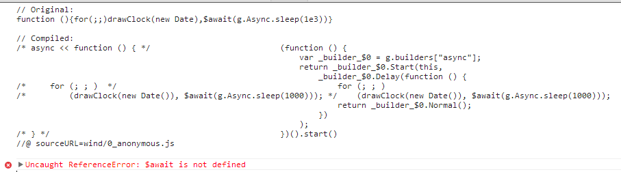
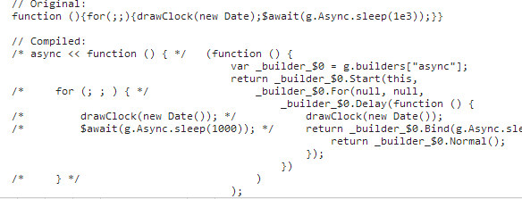

Jscex现已经更名为Windjs，但是还是喜欢叫其Jscex。在使用图形类库程序辅助展示的时候，基本上没法使用step、promise等类库。
比如展示画一个圆形的过程，step需要这样子：
<script> step( function () { lineTo() }, function () { lineTo() }, function () { lineTo() }, function () { lineTo() }, function () { lineTo() }, function () { lineTo() }, function () { lineTo() }, function () { lineTo() }, function () { lineTo() }, function () { lineTo() }, function () { lineTo() }, function () { lineTo() }, function () { lineTo() } //... //... ) </script>
promise需要这样子：
<script> lineTo() .then(function () { lineTo() }) .then(function () { lineTo() }) .then(function () { lineTo() }) .then(function () { lineTo() }) .then(function () { lineTo() }) .then(function () { lineTo() }) .then(function () { lineTo() }) .then(function () { lineTo() }) .then(function () { lineTo() }) .then(function () { lineTo() }) .then(function () { lineTo() }) //... //... </script>
什么都不用需要这样子：
<script> lineTo(function () { lineTo(function () { lineTo(function () { lineTo(function () { lineTo(function () { //.... //.... }) }) }) }) }) </script>
带来的影响还不仅仅是这样子，比如step里function、promise的then、还有callback方式的数据、逻辑、结构等等都会被拆分得支离破碎。而Jscex只需要这样子：用Jscex画圆（好老的文章= =！）
require(["SCJ", "canvas/structure"], function (SCJ) { var graphics = SCJ.createGraphics(200, 200, "#canvasCTT"); eval(graphics.runSync(function () { while (true) { graphics.background(0); graphics.fill(80); graphics.ellipse(100, 100, 160, 160); var s = graphics.map(graphics.second(), 0, 60, 0, graphics.TWO_PI) - graphics.HALF_PI; var m = graphics.map(graphics.minute(), 0, 60, 0, graphics.TWO_PI) - graphics.HALF_PI; var h = graphics.map(graphics.hour() % 12, 0, 12, 0, graphics.TWO_PI) - graphics.HALF_PI; graphics.stroke(255); graphics.strokeWeight(1); graphics.line(100, 100, graphics.cos(s) * 72 + 100, graphics.sin(s) * 72 + 100); graphics.strokeWeight(2); graphics.line(100, 100, graphics.cos(m) * 60 + 100, graphics.sin(m) * 60 + 100); graphics.strokeWeight(4); graphics.line(100, 100, graphics.cos(h) * 50 + 100, graphics.sin(h) * 50 + 100); graphics.sleep(1000); } })) })
当然时钟这种task之间没有联系的不能体现runSync的优势。因为它也可以使用这种方式:
require(["SCJ", "canvas/structure"], function (SCJ) { var graphics = SCJ.createGraphics(200, 200, "#canvasCTT"); with (graphics){ tick(function(){ background(0); fill(80); ellipse(100, 100, 160, 160); var s = map(second(), 0, 60, 0, TWO_PI) - HALF_PI; var m = map(minute(), 0, 60, 0, TWO_PI) - HALF_PI; var h = map(hour() % 12, 0, 12, 0, TWO_PI) - HALF_PI; stroke(255); strokeWeight(1); line(100, 100, cos(s) * 72 + 100, sin(s) * 72 + 100); strokeWeight(2); line(100, 100, cos(m) * 60 + 100, sin(m) * 60 + 100); strokeWeight(4); line(100, 100, cos(h) * 50 + 100, sin(h) * 50 + 100); }); } })
然后通过SCJ Framework-Compile With Statement把with干掉。
什么地方能体现其优势？比如这里：http://weibo.com/iamleizhang/demo43/index.html
在修改wind的过程中，发现逗号分隔的无法编译。这点使用UglifyJS压缩特别需要注意。
修改成分号则能正常编译，如：
